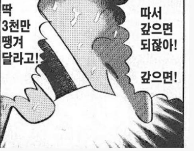
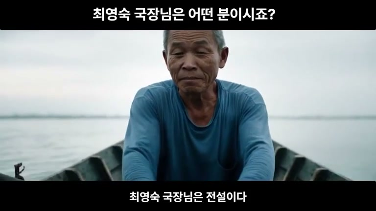
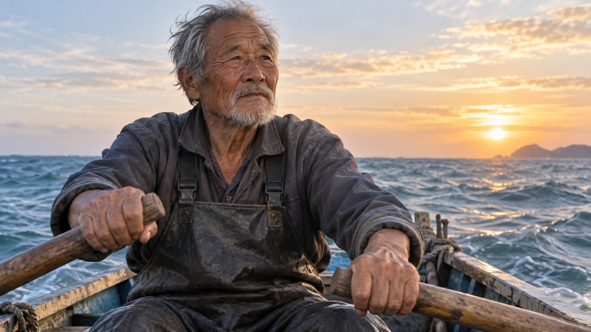
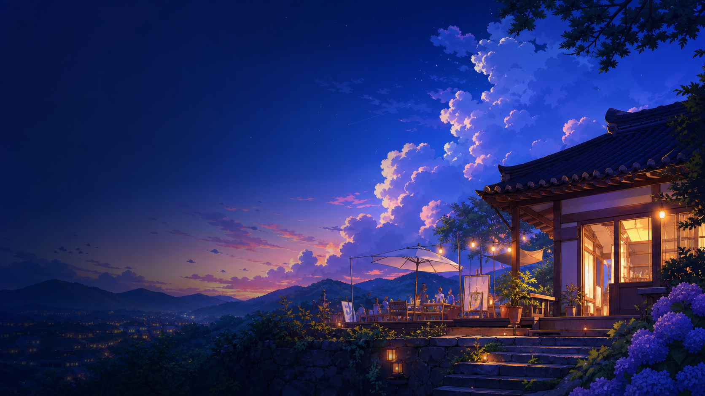

제목과 소속·직급은 2026-09-12 제공 강사프로필을 기준으로 구성했다. 강의 주제는 AI영상제작 맛보기 및 에이전틱한 영상 제작 워크플로우.
전반부는 제작 경험과 일관성, 이미지·영상 실습. 후반부 원리 설명은 기존 전환 화면까지만 유지한다. 새 도입부를 포함해 실습 시작 목표 15분을 맞추려면 자기소개와 구독 이야기는 짧게 진행한다.AI VIDEO WORKSHOP강사 소개02
안녕하세요, 성남시 AI반도체과 반도체팀에서 일하는 사진우입니다.
제 이력이 조금 제각각입니다. 대학에서는 일본어를 전공했고, 첫 회사는 영어교육 앱 스타트업 영상팀이었습니다. 원래 영상 만드는 걸 좋아했어요. 지금은 토목직 공무원이고, AI반도체과에 있지만 담당 업무는 반도체 건물조성입니다.
그 와중에 AI로 상상한 장면을 만드는 일도 계속하고 있습니다. 성남시 AI 동호회 DLC를 만들고 운영하고 있고요. 댄스배틀 우승·준우승에 카투사 복무까지, 일관성과 평범함을 찾기는 조금 어려운 커리어입니다.
직급·경력·활동은 2026-09-12 강사프로필 기준. 이전 강의자료와 재직 기간 표기가 달라 본문에는 개월 수를 적지 않았다.
댄스배틀 이력 옆의 공연 영상 버튼을 누르면 사용자가 제공한 KUDT 정기공연 BlissouT 영상의 원본 03:21~03:40 구간을 약 19초간 상영한다. 수상 당시의 배틀 영상으로 소개하지 않는다. 원본은 그대로 두고 브라우저 호환 H.264/AAC 재생용 구간 파일을 연결했다. 클릭할 때마다 구간 처음부터 재생하며, 닫거나 페이지를 넘기면 멈춘다.AI VIDEO WORKSHOP내 이야기0324
2024—2026
수상·활동 기록
24개의 기록
제가 이것저것 해왔던 기록을 한 장에 모아봤습니다. 노래 대회, 글쓰기, AI 경진대회부터 다른 부서 업무 지원까지 섞여 있어요.
슬라이드 진입 후 약 4.5초 동안 업적들이 사방에서 날아와 시간순으로 정렬된다. “한 번에 보기”로 바로 정렬하거나 “다시 날려보기”로 재생한다. 작은 항목을 클릭하면 전체 명칭·날짜·금액·메모가 중앙에서 크게 열린다.
복면끼왕에서는 “복정동 약수터마스터”라는 이름으로 2등을 했고요. 직원 AI 활용 경진대회와 독후감 공모전에서는 1위를 했습니다. 다른 부서 발표를 돕거나 영상을 만드는 일도 계속했습니다.
올해는 행정안전부 AI 전문인재교육에 4.7 대 1 경쟁률로 선발됐고, 9월에는 서울 국제협력 영상 챌린지 공모전 개인분야 결선에 진출했습니다. 아직 결선 진출 단계입니다.
독립운동가 영상 프로젝트는 진행 중이며, 2026년 실적을 평가하는 2027년 합동평가 정성지표의 시민 참여형 보훈문화 행사·체험 우수사례에 기여합니다.
상금뿐 아니라 사례비나 소소한 상품권도 있습니다. 이렇게 만든 경험과 작품들을 이제 보여드릴게요.
출처: 사용자가 최신본으로 제공한 2024.06–2026.09 업적 24개. 일부 긴 제목과 메모는 한눈에 보이도록 줄였으며, 각 항목의 상세 보기와 아래 목록에는 전체 내용을 유지했다.
2024.06 · 복면끼왕 2등 · 복정동 약수터마스터 · 500,000원
2024.12.27 · 2024 정부혁신 우수사례 우수 · 300,000원
2025.05.08 · 직원 AI 활용 경진대회 최우수 (1위) · 1,000,000원
2025.06.17 · 청렴 에세이 장려 · 50,000원
2025.09.02 · 적극행정 마일리지 · 범정부 모범실패사례 제출 · 50,000원
2025.10.14 · 제3회 독후감 공모전 대상 (1위) · 300,000원
2025.10.22 · 건강인성남 챌린지 우수 (2위) · 500,000원
2025.10.24 · AI 챔피언 그린 취득
2025.11.12 · 하반기 직원 AI 활용 경진대회 팀부문 장려상 · 5만 원은 성재 주사님 · 450,000원
2025.11.27 · 범정부 모범실패사례 · 인사혁신처장 · 1,000,000 → 750,000원
2025.12.06 · 수도시설과 발표 지원 · 150,000원
2025.12.09 · AI 챔피언 블루 취득
2025.12.12 · 1분 성남스토리 우수상 (2등) · 1,500,000원
2025.12.23 · 여기고기 숏폼 공모전 참가상 · 스타벅스 10,000원
2026.03.25 · 롯데장학재단 공모전 참가상 · 50,000원
2026.05.05 · 반도체팀 성과시상금 발표자료 제작 · 스타벅스 50,000원
2026.05.07 · 행정안전부 AI 전문인재교육 선발 · 경쟁률 4.7 : 1
2026.05.27 · 환경정책과 환경의 날 AI 영상 제작 지원
2026.06.05 · 고용노동부 FGI 참여 · 200,000원
2026.06.09 · 국장님 일반현황 하이퍼링크·책갈피 미션 완료
2026.06.29 · 성남 페이스북 취합기 브라우저 확장 프로그램 배포 · 1.22 업데이트 진행
2026.06.30 · 시장님 취임기념 영상 제작 및 배포
2026.07.30 · 성남시 출신 독립운동가 영상 프로젝트 · 진행 중 · 2027년 합동평가 정성지표(2026년 실적)
「시민 참여형 보훈문화 행사·체험 우수사례」 기여
2026.09.04 · 서울 국제협력 영상 챌린지 공모전 · 개인분야 결선 진출
금액은 사용자 메모 그대로다. 450,000원 항목의 개인 몫, 1,000,000원 → 750,000원의 변경 사유·세금 여부는 추정하지 않는다. 총액이나 수익률을 계산하지 않는다. 2024.06은 일자를 추정하지 않았고, 진행 중·결선 진출 상태를 유지했다.
모션 참고: 첨부 원본 HTML의 df-fly, speaker-cam, speaker-title과 speaker-type-hero CSS. 개별 이동·회전·깊이감·시간차를 이 강의의 한 장짜리 업적 화면에 맞춰 다시 구현했다.AI VIDEO WORKSHOP내 이야기04
AI 활용 분야
01
바이브코딩
성남 페이스북 취합기 확장 프로그램 배포
02
내부 혁신
성남시 AI 동호회 DLC 창설·운영
03
영상 제작·홍보
정책홍보와 행사 영상 다른 부서의 제작 의뢰
영상 말고도 AI를 여러 분야에 활용하고 있습니다. 바이브코딩으로 필요한 도구를 직접 만들어보고요. 기존 자료에 있던 성남 페이스북 취합기 확장 프로그램도 그 예입니다.
동호회 DLC에서는 같이 배우고 실험하면서 내부 혁신으로 연결하려고 하고, 영상 제작과 홍보에서도 계속 써보고 있습니다.
그런데 이렇게 이것저것 해보다 보니, 다음 장면을 보시면 많은 분이 포기하고 싶어지실 것 같아요. 제 개인 구독 현황입니다.
확장 프로그램은 최신 업적 목록의 2026-06-29 배포, 1.22 업데이트 진행을 반영한다. DLC와 영상 의뢰는 최신 강사프로필 및 사용자 발언 기준. 구체적 업무 절감 시간이나 이용자 수는 추가하지 않았다.AI VIDEO WORKSHOP2026.09 · 개인 지출 기준05
개인 구독 현황
150,000원
65,000원
동호회 공동구독
30,000원
35,000원
45,000원
5,000원
월 구독료 합계
필쫀쿠 적용 · 월 160,000원 절감
원래는 Pro 20x를 빼고 월 30만 원 언저리였습니다.
추가 전 330,000원 Gemini 공동구독 분담금 제외
하드웨어 구입 · 일회성 지출
맥미니
2026.02 구입
890,000원
장표는 전 항목 체크, 필쫀쿠 적용 전 상태로 시작한다. ChatGPT Pro 20x 금액 350,000원을 누르면 190,000원으로 바뀌고 합계도 680,000원에서 520,000원으로 바뀐다. 다시 누르면 원래 금액으로 돌아온다. 체크박스를 켜거나 끄면 해당 금액을 합계에 넣거나 뺀다. 할인 상태에서 Pro 5x·Claude·SuperGrok을 끄면 290,000원이 된다. Gemini 공동구독의 개인 분담금은 미제공이므로 체크 여부와 관계없이 계산에 넣지 않는다. 맥미니도 월 합계에서 제외한다. 처음으로 버튼으로 초기 상태를 복원하며, 다른 장으로 다녀와도 선택은 유지된다.
사용자가 제공한 개인 구독 비용이며 서비스 공식 정가표가 아니다. ChatGPT Pro 20x는 필쫀쿠를 활용해 350,000원에서 190,000원으로 절감했다고 사용자가 추가로 알려주었다. 월 160,000원 절감이며, 이를 반영한 월 구독 합계는 520,000원이다. Pro 20x를 제외하면 330,000원으로 “30만 원 언저리”다. Gemini 공동구독 분담액은 미제공이어서 합계에 넣지 않았다.
ChatGPT Pro 20x와 5x는 사용자가 적은 개인 구독 명칭을 유지했다. 부가세·환율·연간결제 환산 여부 등은 추정하지 않는다.
하드웨어 구입: 2026년 2월 맥미니 890,000원. 일회성 구입비이며 월 구독 합계에 포함하지 않는다.AI VIDEO WORKSHOP도입06

사용자의 농담을 그대로 살린다. 한 박자 쉬고 “따서 갚으면 되잖아!”라고 말한 뒤 실제 제작 경험으로 넘어간다. 구독을 수강생의 필수 조건으로 제시하거나 수익을 보장하는 설명은 덧붙이지 않는다.AI VIDEO WORKSHOP제작 경험07
오늘 강의
01
처음 만든 영상
02
제작 방식의 변화
03
지금 쓰는 방법
“오늘 강의는 제가 만들어온 영상들을 기반으로, 어떤 식으로 발전해왔는지, 어떤 방식을 사용하는지를 보여드리고자 합니다.” 모델 목록 소개보다는 경험과 제작 방식의 변화를 따라간다.
앞에서는 어떤 활동을 하는지 전체 모습을 보여드렸습니다. 이제부터는 제가 만들어온 영상들을 따라가면서, 어떤 방식으로 만들었고 어디서 막혔는지 이야기해보겠습니다. 먼저 2025년 6월, 국장님 퇴임식으로 돌아가 볼게요.AI VIDEO WORKSHOP2025.06 · 제작 경험08
국장님 퇴임식 영상
익숙한 퇴임식 영상
“국장님, 제2의 인생을 응원합니다!”
부서별 인사 영상을 모아 편집 AI 생성 예시
AI반도체과
AI반도체과다운 영상
“저한테 일임해 주십시오.”
“처음 시작은 아무도 예측 못하시겠지만, 국장님 퇴임식 영상입니다.” 익숙한 퇴임식 형식을 개인 경험으로 설명한다. 왼쪽 이미지는 이전 요청으로 생성한 퇴임 인사 촬영 예시다. 실제 직원이나 실제 퇴임식 기록 사진이 아니며 장표에 AI 생성 예시로 표시했다. 누르면 원본을 크게 볼 수 있다. 직원들이 풍선에 글자를 새기거나 종이에 “국 장 님 제2의 인생을 응원합니다!”를 적어 부서별로 찍은 영상을 이어 붙이는 방식이었다.
“저는 여기에 AI반도체과다운 무언가가 필요하다 생각해서, 저한테 일임해 주십시오 했어요.”
사용자는 2025년 4월 나온 Veo 3라고 기억했으나 공식 발표는 2025년 5월 20일이다. 6월 퇴임식 사용 시점은 유지한다.
출처: https://blog.google/innovation-and-ai/products/generative-media-models-io-2025/AI VIDEO WORKSHOP2025.06 · Veo 309
국장님 퇴임식 영상
▷
국장님 퇴임식 영상2025.06 사용 · 국장님 퇴임식 영상
영상 상영. 노를 젓는 노인과 거북선 안의 장수가 “최영숙 국장님 is legend”라고 말하는 부분을 짧게 보여준다. 사용자가 제공한 BandVideo (1).mp4를 연결했다. 단일 HTML에도 영상 데이터를 포함해 별도 파일 없이 재생한다. 전체 도입 시간이 길어지지 않도록 발췌 재생한다.AI VIDEO WORKSHOP제작 경험10
“저 직원은 누구야?”
“반응은 되게 좋았습니다. 사람들이 AI에 그렇게 익숙하지가 않았어서 AI영상을 보면서 저 직원은 누구야??라고 하는 반응도 있었습니다.” 사용자 경험으로 전달한다.
Veo 3에 대해서는 이제 AI영상이 목소리와 입모양을 맞춰 나온다는 점에 사람들이 감탄했다. 모든 결과가 늘 완벽했다는 의미로 일반화하지 않는다.
이미지는 사용자 제공 BandVideo (1).mp4의 낙하산 장면 00:42.500을 직접 캡처했다. 원본 영상의 자막과 구도를 그대로 유지했다.AI VIDEO WORKSHOPVeo 3 · 2025.05.20 공개11
Veo 3에 넣었던 프롬프트
Gemini 동영상 기능
바다 위에서 노를 젓고 있는 노인 클로즈업. 노인이 “최영숙 국장님 is legend”라고 말한다. 말할 때 번개가 친다.

퇴임식 원본 영상 · 노를 젓는 장면
사용자의 실제 요청을 읽기 쉽게 문장만 정리했다. “바다 위에서 노를 젓고 있는 노인 클로즈업한 상태에서 노인이 ‘최영숙 국장님 is legend’라고 말한다. 말할 때 번개가 친다.”
오른쪽 이미지는 사용자 제공 BandVideo (1).mp4의 노를 젓는 장면 00:34.500을 직접 캡처한 것이다.
그 당시 Gemini에서 동영상 버튼을 눌러 말로 프롬프팅한 경험을 설명한다. 현재 메뉴를 안내하는 실습 단계는 아니다.
Veo 3 공식 발표: https://blog.google/innovation-and-ai/products/generative-media-models-io-2025/AI VIDEO WORKSHOP제작 경험12
다시 ‘노인’이라고 하면?
첫 번째 생성
바다 위에서 노를 젓는 노인
얼굴·옷차림 생성

다음 생성 · 동일 프롬프트
바다 위에서 노를 젓는 노인
얼굴·옷차림이 달라질 수 있음
“저희가 그냥 노인이라고 말을 했잖아요? 다음에 또 노인이라고 언급했을 때 전에 만들었던 노인과 동일하게 나오지 않습니다.”
일반적인 인물 묘사만으로 이전 결과의 정체성이 지정되지는 않는다는 의미다. 생성에는 변동성이 있어 별도 생성에서 얼굴·복장 등이 달라질 수 있다고 설명한다. 매번 반드시 다른 사람이라는 단정이나 모델 원리를 단순한 무작위 추출로 환원하는 설명은 피한다.
두 이미지는 내장 이미지 생성 도구로 같은 프롬프트를 각각 한 번씩 실행한 결과다. 참조 이미지는 첨부하지 않았다. 얼굴이나 의상이 다르게 나오도록 별도 지시하지 않았다.
두 번 모두 사용한 전체 프롬프트: 바다 위에서 노를 젓는 노인. 얼굴과 상반신이 잘 보이는 실사 사진, 가로 16:9 구도. 글자 없음.
이 강의의 비교 설명을 위해 새로 만든 이미지이며, 2025년 Veo 3 원본 결과물은 아니다.AI VIDEO WORKSHOP제작 경험13
더 길고 재미있는 영상
만들고 싶은 것
숏폼 · 드라마
그다음 필요한 것
연속성 있는 캐릭터 유지
인간의 욕심을 유머 있게 이어간다. “나 숏폼을 만들고 싶어, 드라마를 만들고 싶어.” 스토리가 있는 무언가를 원하다 보니 캐릭터와 맥락의 연속성을 생각하게 된다. 다음 장에서는 원하는 모습을 이미지로 첨부해 의도를 더 강하게 반영하는 방법을 설명한다.AI VIDEO WORKSHOP제작 경험14
이미지를 첨부하면 의도가 더 잘 반영됩니다
이미지 생성첨부 1장
노를 젓는 노인.png ×
요청
이 얼굴, 이 옷차림으로 노를 젓게 해줘.
↑
“원하는 모습이 있으면 이미지를 첨부하는 거예요. 이 얼굴, 이 옷차림으로 노를 젓게 해줘. 이렇게 이미지를 같이 주면 제 의도를 더 강하게 반영할 수 있습니다.”
화면은 14페이지에서 첫 번째로 생성한 노인 이미지를 LLM 입력창에 넣고 요청하는 예시다. 사진 속 얼굴과 옷차림을 짚으며 말로만 지정하기 어려운 시각적 기준을 함께 전달한다는 점을 설명한다. 이 장은 첨부 방식의 설명이며, 첨부 후 새로 생성한 결과를 보여주는 장은 아니다.
이미지를 첨부해도 모든 세부가 반드시 그대로 유지되는 것은 아니다. 다음 이준영 쇼츠를 보고 시작·끝 이미지를 지정하는 방식으로 이어간다.AI VIDEO WORKSHOP제작 경험15
이준영 쇼츠
▷
이준영 쇼츠사용자 제공 영상
“당시에 인상 깊게 봤던 숏폼 하나 보여드릴게요.” 영상 상영 후 재생바를 움직이며 장면 경계와 움직임을 설명한다. “잠깐잠깐 끊기는 느낌, 이미지 사이를 영상으로 이어주는 모습이 보이시나요?”라는 질문을 사용한다.
사용자가 제공한 「감성 만점, 낭만합격 이준영 변천사,스토리」 영상으로 기존 YouTube 임베드를 교체했다. 약 59.63초, 1080×1920 세로 영상이며 H.264/AAC를 포함한다. 중앙에서 원래 비율로 재생하고, 단일 HTML에도 내장한다.
이 영상이 실제로 어떤 생성 기법으로 제작됐는지는 별도로 확인하지 않았다. 사용자가 제시한 관찰 포인트를 토대로 다음 장에서 스타트·엔드 프레임 원리를 설명한다.AI VIDEO WORKSHOPKling · 시작·끝 이미지 예시16
스타트 프레임 · 엔드 프레임
시작 이미지끝 이미지
시작 · 끝
두 이미지를 AI가 이어줍니다
중간 동작
프롬프트로 지정
사용자의 작업 흐름에서 2025년 하반기부터 활용한 기법. 캐릭터를 만들고 첫 장면과 맨 끝 장면을 넣으면 그 사이를 AI가 채운다. 당시 주로 사용한 것은 Kling.
최초 발명·출시 연도를 주장하는 연표가 아니다. 두 이미지를 조건으로 생성하는 방식이며, 원하는 중간 행동이나 얼굴 유지가 자동 보장되지는 않는다.
공식 사용법: https://kling.ai/quickstart/ai-video-start-end-frames
사용자가 첨부한 Kling 화면으로 시작·끝 프레임을 설명한다. 왼쪽은 흰 민소매 차림으로 짜장면을 먹는 인물, 오른쪽은 검은 민소매 차림으로 책상 앞에 앉은 인물이다. 아래 입력란에는 짜장면이 옷에 흡수되며 민소매 색이 검정으로 바뀌는 중간 동작이 적혀 있다. 장표에서는 이미지 두 장과 입력란을 확대해 보여주고, 클릭하면 원본 전체가 열린다. 화면의 모델 표기는 VIDEO 3.0이다. 이 이미지를 2025년 당시 화면이라고 소개하지 않는다.
원본: 사용자 제공 codex-clipboard-5216d1a5-4197-4bce-b744-d929a74a116b.png. 이미지 파일은 수정 없이 포함했다.AI VIDEO WORKSHOPKling · 결과 영상17
스타트·엔드 프레임 결과
▷
스타트·엔드 프레임 결과 영상Kling · 사용자 제작 영상
앞 장의 시작·끝 이미지로 만든 결과 영상을 상영한다. 두 이미지 사이에서 인물의 동작과 옷이 어떻게 바뀌는지 살펴본다. 필요하면 멈추거나 되돌려 설명한다. 다음 장에서는 끝 프레임을 다음 클립의 시작 프레임으로 이어 쓰는 방법을 설명한다.
사용자가 제공한 kling_20260912_VIDEO_먹던_짜장면이_옷에_4617_0.mp4를 원본 그대로 포함했다. 단일 HTML에도 내장하며 다른 장으로 이동하면 재생을 멈춘다.AI VIDEO WORKSHOP제작 경험18
엔드 프레임을 다음 스타트 프레임으로
클립 01
A→B
시작 A → 끝 B
같은 이미지 B 이어 쓰기
클립 02
B→C
시작 B → 끝 C
동작의 속도·방향이 다르면 연결 지점에서 멈칫할 수 있음
“첫 번째 장면의 엔드 프레임을 다음 장면의 스타트 프레임으로 하는 식으로 한다면, 살짝의 멈춤은 있겠지만 이어갈 수 있는 것이지요.” 도식의 B가 같은 이미지임을 짚어 설명한다.
첫 클립의 마지막 프레임을 저장해 다음 클립의 첫 프레임으로 사용하거나 같은 기준 이미지를 양쪽에 지정하는 방식이다. 시작·끝 이미지를 조건으로 주고 그 사이 행동을 말로 전달한다. 속도·방향·카메라의 움직임까지 자연스럽게 이어지도록 조정해야 한다.
영상에서 보이는 모든 멈춤이 이 기법 때문이라고 진단하지 않는다. 제작자의 실제 기법 확인과 원리 설명은 구분한다.AI VIDEO WORKSHOP스타트·엔드 프레임 · 작품 예시19
스타트·엔드 프레임 적용 작품 예시
▷
스타트·엔드 프레임 적용 작품 예시사용자 제공 작품 영상
앞 장의 엔드 프레임을 다음 스타트 프레임으로 이어 쓰는 설명 다음에, 사용자가 해당 기법의 적용 작품 예시로 지정한 영상을 상영한다. 필요하면 멈추거나 되돌려 장면 연결을 설명한다.
사용자 제공 BandVideo (3).mp4를 원본 그대로 복사했다. 약 29.30초, 432×768 세로 영상이며 오디오가 포함되어 있다. 화면 중앙에서 원래 비율을 유지해 크게 재생한다. 단일 HTML에도 영상 데이터를 내장하고, 다른 장으로 이동하면 일시정지한다.
18장 YouTube 링크와 같은 작품이라고 임의로 단정하거나 기존 쇼츠를 교체하지 않는다.AI VIDEO WORKSHOP제작 경험20
이 영상으로 2등했습니다
저에게 벌어다준 것
성남사랑상품권
500,000원
그런데, 보신 것에서 느껴지셨을 겁니다
엔드 프레임과 다음 스타트 프레임이 될 때,
끝 프레임살짝 멈춤다음 시작 프레임
멈췄다가 진행되는 느낌이 조금 어색합니다.
“이 영상으로 해당 대회 2등을 했고요, 저에게 성남사랑상품권 50만 원을 벌어다줬습니다.” 결과를 짧게 언급한다.
영상 직후 “보신 거에서 이제 느껴지시는 게 있을 겁니다”라고 이어간다. 엔드 프레임이 다음 스타트 프레임이 될 때 잠깐 멈췄다가 진행되는 느낌이 어색하다는 점을 재생바로 짚는다. 이 현상이 모든 프레임 연결 영상에 반드시 나타난다고 일반화하지 않는다.AI VIDEO WORKSHOP친구 뮤직비디오 · 제작 계기21
레벨 업 케이스
친구들과 간 별장.
술에 취한 치과의사 친구가 이런 말을 했습니다.

스타트·엔드 프레임 설명 다음에 실제로 만든 뮤직비디오 사례를 소개한다.
“원래 영상을 좋아했고, 스타트업 영상팀에서 일한 적도 있습니다. 그러다 친구들과 별장에 갔을 때 있었던 일인데요. 술에 취한 치과의사 친구가 이런 말을 했어요.”
이전 15장 초안에 있던 만취한 치과의사 친구와 별장 이야기를 복원했다. 친구 이름이나 실제 장소는 추가하지 않는다. 다음 장으로 넘기고 친구의 한마디를 보여준다.
이미지는 이전 자료의 part01-villa-sky.png다. 실제 모임 사진으로 설명하지 않는다. 2025년 6월 퇴임식 영상과의 제작 선후관계, 프로필과 표기가 다른 영상팀 재직 개월 수는 새로 단정하지 않는다.
만화 원본: C:/Users/sajw1/Downloads/ai-content-workflow-lecture/index.html 5장 및 assets/unfair-comic.png. 출처: 작업공간 claude-fable-source/AI 컨텐츠 자동화 발표.dc.html의 2–4장(친구 이야기), 사용자 제공 「AI 콘텐츠 제작 경험 공유 및 자동화_단독실행.html」의 4–6장 및 같은 폴더의 assets(이미지·영상).AI VIDEO WORKSHOPThe World Should Be Mine · 1–2컷22
억울하다, 억울해 1–2컷
친구들과 술을 마시던 자리에서 치과의사 친구가 억울하다고 말한다. 어머니가 공부해서 의사가 되면 세상이 네 것이라고 했던 이야기가 이어진다. 원본 만화의 1–2컷을 보여주고 다음 장으로 넘긴다.
사용자가 기억한 만화가 포함된 버전은 Downloads/ai-content-workflow-lecture/index.html이다. 원본 5장의 6컷 만화를 삭제·재생성·내용 수정 없이 가져왔다. 발표 중 대사가 읽히도록 두 컷씩 세 장에 나누어 표시하고, 클릭하면 원본 전체를 볼 수 있다. 실제 별장 사진이나 친구들의 신원을 보여주는 사진이 아니라 이야기 설명용 만화다.
만화 원본: C:/Users/sajw1/Downloads/ai-content-workflow-lecture/index.html 5장 및 assets/unfair-comic.png. 출처: 작업공간 claude-fable-source/AI 컨텐츠 자동화 발표.dc.html의 2–4장(친구 이야기), 사용자 제공 「AI 콘텐츠 제작 경험 공유 및 자동화_단독실행.html」의 4–6장 및 같은 폴더의 assets(이미지·영상).AI VIDEO WORKSHOPThe World Should Be Mine · 3–4컷23
억울하다, 억울해 3–4컷
치과의사가 되었지만 세상이 내 것이 되지 않았다는 친구의 하소연. 원본 만화의 3–4컷을 보여준다. 설명을 덧붙이기보다 그림 속 대사를 짚는다.
사용자가 기억한 만화가 포함된 버전은 Downloads/ai-content-workflow-lecture/index.html이다. 원본 5장의 6컷 만화를 삭제·재생성·내용 수정 없이 가져왔다. 발표 중 대사가 읽히도록 두 컷씩 세 장에 나누어 표시하고, 클릭하면 원본 전체를 볼 수 있다. 실제 별장 사진이나 친구들의 신원을 보여주는 사진이 아니라 이야기 설명용 만화다.
만화 원본: C:/Users/sajw1/Downloads/ai-content-workflow-lecture/index.html 5장 및 assets/unfair-comic.png. 출처: 작업공간 claude-fable-source/AI 컨텐츠 자동화 발표.dc.html의 2–4장(친구 이야기), 사용자 제공 「AI 콘텐츠 제작 경험 공유 및 자동화_단독실행.html」의 4–6장 및 같은 폴더의 assets(이미지·영상).AI VIDEO WORKSHOPThe World Should Be Mine · 5–6컷24
억울하다, 억울해 5–6컷
“이거 안 까먹게 뮤비로 만들어야겠다.” 친구의 이야기를 소재로 영상을 만들기로 하고 노트북을 두드리는 장면이다. 다음 장의 실제 뮤직비디오 상영으로 바로 이어간다.
사용자가 기억한 만화가 포함된 버전은 Downloads/ai-content-workflow-lecture/index.html이다. 원본 5장의 6컷 만화를 삭제·재생성·내용 수정 없이 가져왔다. 발표 중 대사가 읽히도록 두 컷씩 세 장에 나누어 표시하고, 클릭하면 원본 전체를 볼 수 있다. 실제 별장 사진이나 친구들의 신원을 보여주는 사진이 아니라 이야기 설명용 만화다.
만화 원본: C:/Users/sajw1/Downloads/ai-content-workflow-lecture/index.html 5장 및 assets/unfair-comic.png. 출처: 작업공간 claude-fable-source/AI 컨텐츠 자동화 발표.dc.html의 2–4장(친구 이야기), 사용자 제공 「AI 콘텐츠 제작 경험 공유 및 자동화_단독실행.html」의 4–6장 및 같은 폴더의 assets(이미지·영상).AI VIDEO WORKSHOP친구 뮤직비디오25
〈The World Should Be Mine〉
▷
The World Should Be Mine이전 발표자료의 상영 영상
이전 발표자료에 들어 있던 〈The World Should Be Mine〉 상영본을 재생한다. 해당 자료의 first-music-video.mp4는 약 40.36초이며 음성이 포함되어 있다. 곡 전체 길이를 의미하지 않는다.
원본 파일을 변환 없이 복사해 단일 HTML에도 내장했다. 중앙에서 크게 재생하고, 다른 장으로 넘어가면 일시정지한다. 이 작품의 실제 생성 도구나 기법을 영상만 보고 새로 단정하지 않는다. 상영 후 이 작품의 젠스파크 실제 제작 내역에서 캐릭터 선정과 장면 생성을 보여주고 취미 시리즈 GIF로 이어간다. 일관성 문제는 시정 홍보영상 사례 뒤에서 다시 짚는다.
만화 원본: C:/Users/sajw1/Downloads/ai-content-workflow-lecture/index.html 5장 및 assets/unfair-comic.png. 출처: 작업공간 claude-fable-source/AI 컨텐츠 자동화 발표.dc.html의 2–4장(친구 이야기), 사용자 제공 「AI 콘텐츠 제작 경험 공유 및 자동화_단독실행.html」의 4–6장 및 같은 폴더의 assets(이미지·영상).AI VIDEO WORKSHOPThe World Should Be Mine · 제작 내역26
이미지 = 영상의 가이드
처음 고른 얼굴→전신 · 흰 배경 · 16:9
“이 캐릭터가 좋다 ㅇㅇ 전신을 보여주고 16:9 비율로 만들어줘 배경은 흰색으로 해서 응용이 가능하도록”
“캐릭터 후보를 몇 장 뽑고, 그중 마음에 드는 한 장을 고릅니다. 이 캐릭터가 좋다, 전신을 보여주고 흰 배경으로 만들어달라고 했어요. 이 이미지를 다운받아서 다음 장면을 만드는 데 쓰는 거죠.”
세션의 실제 순서: 3가지 후보 → 긴 얼굴형 강조 → 버전 3을 더 젊게 수정 → ‘이 캐릭터가 좋다’고 선택 → 16:9 흰 배경 전신 요청. 장표의 인용은 사용자 원문 그대로이며 줄바꿈만 조정했다. 처음 제공한 만화 캐릭터 자체가 아니라, 여러 후보 중 최종 선정한 얼굴을 보여준다.
출처: https://www.genspark.ai/agents?id=3cfb97f6-3a8a-42ec-9833-b6680995be37 · 「신카이 스타일 30대 캐릭터 변형」. 2026-09-13 Chrome에서 대화·이미지·수정 요청을 확인했다. 기준 얼굴과 전신은 다운로드한 JPEG 원본이며, 장면 이미지는 세션의 확대 화면에서 이미지 영역만 보이도록 보관한 캡처다. 색·얼굴·의상·선명도를 바꾸지 않았다.AI VIDEO WORKSHOPThe World Should Be Mine · 제작 내역27
장면별 이미지를 만들고, 영상으로
“기본 주인공 캐릭터의 애니메이션 일관성을 유지하고”
기타 연주빗속 걷기친구들과 캠프파이어
캐릭터 이미지 첨부→장면별 이미지 생성→장면별 영상 생성
“이 캐릭터로 40컷짜리 뮤직비디오를 만들겠다고 하고, 가사와 꼭 넣고 싶은 장면을 줬습니다. 캐릭터 이미지를 첨부해서 장면별 이미지를 만들고, 그 이미지들로 영상을 생성했어요.”
실제 세션에 ‘40컷짜리 뮤직비디오’ 요청, 기타 연주·독서실·소개팅·친구 별장 등 필수 장면, Nano Banana Pro 사용 및 주인공 일관성 유지 요청이 있다. 이어 ‘장면들을 전부 다운로드 받게 해줘, 파일명은 001~040’이라는 요청도 확인했다. 장표에는 실제 생성된 기타 연주·빗속 걷기·친구들과 캠프파이어 이미지를 사용한다.
이 젠스파크 세션에서 확인한 것은 캐릭터와 장면 이미지의 생성 과정이다. 이미지로 영상을 만들었다는 과정은 사용자의 제작 설명을 따른다. 젠스파크가 영상까지 생성했다거나 특정 영상 모델을 썼다고 새로 단정하지 않는다. 완성 이미지들 보기 버튼은 같은 세션에서 모은 46장의 갤러리를 연다. 이미지를 선택하면 크게 볼 수 있고 좌우 버튼과 방향키로 넘길 수 있다. 수정본이 있는 030·032·033·038·047번은 수정한 이미지를 사용했다. 006번은 원본 세션에서 이미지 생성 실패로 표시되어 제외했다. 이미지들은 단일 HTML에 내장되어 있다.
출처: https://www.genspark.ai/agents?id=3cfb97f6-3a8a-42ec-9833-b6680995be37 · 「신카이 스타일 30대 캐릭터 변형」. 2026-09-13 Chrome에서 대화·이미지·수정 요청을 확인했다. 기준 얼굴과 전신은 다운로드한 JPEG 원본이며, 장면 이미지는 세션의 확대 화면에서 이미지 영역만 보이도록 보관한 캡처다. 색·얼굴·의상·선명도를 바꾸지 않았다.AI VIDEO WORKSHOP취미로 만든 영상28
재밌어서 몇 개 더 만들었습니다
01다들 이런 적 있지 않나요?02전설의 마스터 김맹덕03Welcome To Sanghyun Kingdom
“이걸 만들어보니 재밌어서 몇 개 더 만들었습니다.”
사용자가 동호회 홍보와 김맹덕 GIF가 있던 페이지로 지목한 원본 「AI 콘텐츠 제작 경험 공유 및 자동화_단독실행.html」의 7장 ‘취미 시리즈’를 가져왔다. 원본에 있던 「다들 이런 적 있지 않나요?」, 「전설의 마스터 김맹덕」, 「Welcome To Sanghyun Kingdom」 세 작품의 제목·순서·GIF를 그대로 유지한다. 필요하면 GIF를 눌러 크게 보여준다.
GIF는 원본의 짧은 발췌 미리보기이며 소리가 없다. 전체 작품 영상이나 새로 생성한 결과물이 아니다. 개별 작품의 제작 기법은 추가로 단정하지 않는다. 오른쪽 아래 Google Flow 링크를 눌러 새 탭에서 열 수 있다. 이후 영상 제작 워크플로우와 시정 영상 반영 계기로 이어간다.
출처: C:/Users/sajw1/Downloads/AI 콘텐츠 제작 경험 공유 및 자동화/AI 콘텐츠 제작 경험 공유 및 자동화_단독실행.html 7장 및 같은 폴더 assets의 nuzic-sky-short.gif, nuzic-master-kim.gif, nuzic-sanghyun-kingdom.gif.AI VIDEO WORKSHOP수작업 워크플로우 · 원본 강의 8페이지 참고29
영상 제작 워크플로우
처음에는 이 다섯 단계를 혼자 돌렸습니다.
01
기획
LLM과 대화로 장면 구체화
02
음악
프롬프트 정리 → Suno 생성
03
이미지 T2I
캐릭터부터 장면을 한 장씩
04
영상화 I2V
이미지로 6초 클립 생성
05
편집
컷편집·자막 마무리
“처음에는 이렇게 했습니다. 기획하고, 음악 만들고, 장면 이미지를 한 장씩 만들고, 그걸 영상화해서 편집으로 마무리했습니다.”
사용자가 지정한 원본 「AI 콘텐츠 제작 경험 공유 및 자동화_단독실행.html」 8페이지 ‘수작업 워크플로우’를 현재 자료의 톤으로 옮겼다. 원본의 다섯 단계와 내용은 유지했다: 기획(LLM과 대화로 장면 구체화) → 음악(음악 제작 GPTs 프롬프트 → Suno 생성) → 이미지 T2I(Grok 캐릭터 → Gemini로 한 장씩 생성) → 영상화 I2V(Grok Imagine으로 6초 클립 생성) → 편집(캡컷 컷편집·자막 마무리).
화면에는 도구 이름을 모두 늘어놓지 않고 작업 순서만 남긴다. 원본의 수작업 시기를 설명하는 흐름이며, 다음 장에서는 시정 영상 반영 계기를 보여준다. 이후 멀티 레퍼런스가 이 과정에서 일관성을 높이기 위해 쓰이기 시작한 맥락으로 이어진다.AI VIDEO WORKSHOP메타 프롬프팅30
메타프롬프팅이란?
GPT한테 프롬프트를 써달라고 합니다.
01 · 나의 요청
초원 위 20대 남성이 자연광을 받으며 질주하는 이미지를 ChatGPT Image 2로 만들 건데 메타프롬프팅 해줘
→
GPT IMAGE 2 · 생성 프롬프트 예시
첨부한 인물의 얼굴 특징과 의상을 유지한 20대 남성이 넓은 초원 위를 전력으로 질주한다. 낮은 카메라 시점의 다이내믹한 미디엄 와이드 샷, 인물의 진행 방향으로 열린 화면, 바람에 흔들리는 긴 풀과 뒤로 흐르는 배경으로 속도감을 표현한다. 따뜻한 오후의 자연광이 인물의 옆얼굴과 어깨선을 스치고, 역광의 미세한 헤이즈와 풀잎 사이의 빛 입자가 보인다. 피부와 머리카락에는 자연광의 부드러운 하이라이트, 풀밭에는 섬세한 명암과 바람의 결을 표현한다. 순간을 포착한 듯한 힘 있는 자세, 한 발이 지면을 차고 올라오는 동작, 영화적인 색감, 사실적인 질감, 선명한 주인공과 자연스러운 모션 블러, 16:9 가로 화면.
→
03 · 실제 제작 도구
ChatGPT가 정리한 완성 프롬프트를 GPT Image 2에 입력
29페이지의 수작업 워크플로우 다음에 메타 프롬프팅의 실제 사용 장면을 보여주는 페이지다. 추상적으로 “프롬프트를 설계한다”고 설명하지 말고, 사용자의 거친 요청이 LLM을 거쳐 실제 이미지 제작 도구에 들어가는 과정을 읽어준다.
첫 번째 문장은 사용자가 ChatGPT에게 던지는 원문 예시다. “초원 위 20대 남성이 자연광을 받으며 질주하는 모습의 이미지를 ChatGPT Image 2를 통해 만들 건데 메타프롬프팅 해줘.” 두 번째 문장은 첨부 이미지를 참고해 원하는 움직임과 빛의 질감을 더 구체화해달라는 요청이다.
LLM의 역할은 제작 도구를 대신하는 것이 아니라, 인물·행동·환경·카메라·빛·질감·속도·화면비 같은 제작 요소를 빠뜨리지 않도록 의도를 실행 프롬프트로 변환하는 것이다. 마지막 단계에서 그 결과를 실제 ChatGPT Image 2/GPT Image 2 입력창에 넣는다. 이 페이지는 특정 결과 품질이나 모델명을 보장하는 설명이 아니라, 강사가 실제로 사용하는 “원문 요청 → LLM 정리 → 제작 도구 입력”의 작업 습관을 보여주는 예시다.AI VIDEO WORKSHOP시정 영상 반영 계기31
시정 영상 반영 계기
흑백요리사2 애니패러디
나는 지방직 공무원이다
영상 제작 워크플로우 다음에 시정 영상에 반영하게 된 계기를 소개한다. 왼쪽 제목은 사용자가 지정한 ‘흑백요리사2 애니패러디’다. 오른쪽에는 사용자 제공 ‘나는 지방직 공무원이다’를 배치했다. 각 미리보기를 누르면 중앙의 큰 플레이어에서 해당 영상을 재생한다. Esc 또는 닫기를 누르거나 다른 슬라이드로 이동하면 재생을 멈춘다.
왼쪽 원본: C:/Users/sajw1/Downloads/흑백요리사2 애니 오프닝 - MOVING ON (AI).mp4. 약 1분 57초, H.264 영상과 AAC 음성. 원본 MP4를 변환 없이 assets/cooking-anime-moving-on.mp4로 복사하고 단일 HTML에 내장했다. 이 영상의 제작자를 사용자라고 추가로 단정하지 않는다.
오른쪽 원본: C:/Users/sajw1/Downloads/[MV]나는 지방직 공무원이다.mp4. 약 1분 39초, H.264 영상과 AAC 음성. 원본 MP4를 변환 없이 assets/local-government-official-mv.mp4로 복사하고 단일 HTML에 내장했다. 두 미리보기는 각 영상의 8초 지점에서 추출했다. 제작 계기의 세부 설명은 임의로 덧붙이지 않았다.AI VIDEO WORKSHOP시정 홍보영상32
재밌어서 두 개 더 제작
01Dancing SN CITY02This is Solomon's choice
“재밌어서 두 개 더 제작했습니다.”
왼쪽은 Dancing SN CITY, 오른쪽은 This is Solomon's choice. 사용자가 지정한 원본 강의 HTML 15쪽의 GIF 두 개를 그대로 재사용한다. 각 GIF를 누르면 중앙에서 크게 볼 수 있다. 소리가 없는 짧은 발췌 GIF이며 전체 작품 상영본은 아니다.
출처: C:/Users/sajw1/Downloads/AI 콘텐츠 제작 경험 공유 및 자동화/AI 콘텐츠 제작 경험 공유 및 자동화_단독실행.html 15쪽 ‘시정 홍보영상 제작’. 파일은 해당 자료의 assets/nuzic-dancing-sn-city.gif와 assets/nuzic-solomons-choice.gif. 기존 작업공간 에셋이 원본과 바이트 단위로 같은지 확인했다. 새 이미지 생성, GIF 변환, 프레임 수정 없이 단일 HTML에 내장했다.AI VIDEO WORKSHOP이미지의 중요성33
이미지의 중요성
첨부시킨 이미지의 작풍
=
영상의 작풍
퀄리티 높은 이미지
=
퀄리티 높은 영상
당시에는 구도도 이미지로 잡아줘야 했습니다.
“첨부시킨 이미지의 작풍이 영상의 작풍이 됩니다. 퀄리티 높은 이미지를 줘야 퀄리티 높은 영상이 나오는 거죠.”
이미지를 넣어 영상을 만들던 당시의 제작 경험을 설명한다. 화면의 등식은 이미지가 영상의 시각적 기준이 된다는 발표용 표현이며, 어떤 모델에서나 좋은 이미지 하나로 영상 품질이 보장된다는 뜻으로 확대하지 않는다.
“당시에는 AI가 알아서 구도를 잘 뽑아주지 않았어요. 그래서 좋은 구도가 들어간 이미지를 먼저 줘야 다양한 앵글의 영상을 만들 수 있었습니다.”AI VIDEO WORKSHOPThe World Should Be Mine · 제작 내역34
연속 장면의 옷이 달라짐
046 가운 안에 회색 티셔츠047 가운 안에 파란 수술복
“047번의 현재의 주인공의 안에 옷이 046번과 달라서 쓸수가없어 046에 맞춰서 옷을 통일해줘”
“이 두 장면을 이어서 쓰려고 했는데, 가운 안에 입은 옷이 달라졌습니다. 그래서 046번에 맞춰 옷을 통일해달라고 다시 요청했어요.”
왼쪽 046번과 오른쪽 최초 047번을 비교한다. 047번 오른쪽의 현재 주인공을 짚는다. 학생 시절과 성인 시절의 의상이 다른 것은 의도된 변화이므로 일관성 실패로 설명하지 않는다. 비교 대상은 두 이미지 속 성인 의사의 가운 안쪽 옷이다.
세션에 남은 사용자 수정 요청을 그대로 인용했다. 오른쪽 아래 작은 ‘수정 결과’ 미리보기를 누르면 047번 수정 이미지를 확대한다.
출처: https://www.genspark.ai/agents?id=3cfb97f6-3a8a-42ec-9833-b6680995be37 · 「신카이 스타일 30대 캐릭터 변형」. 2026-09-13 Chrome에서 대화·이미지·수정 요청을 확인했다. 기준 얼굴과 전신은 다운로드한 JPEG 원본이며, 장면 이미지는 세션의 확대 화면에서 이미지 영역만 보이도록 보관한 캡처다. 색·얼굴·의상·선명도를 바꾸지 않았다.AI VIDEO WORKSHOPThe World Should Be Mine · 제작 내역35
이미지 열화
기준 이미지 하나로 계속 만들면, 열화 발생
기준 처음 고른 얼굴→장면 1 기타 연주→장면 2 빗속 걷기→후반부 목 뒤까지 길어진 머리
“얼씨구 머리 장발되고 일관성 다날아갔네?”
“기준 이미지는 이 얼굴입니다. 이걸 넣고 장면을 계속 만들면, 처음에는 비슷해 보이지만 장면마다 표정·머리 모양·그림 느낌이 조금씩 달라집니다. 그러다 이 헤드셋 장면에서는 짧았던 머리가 장발이 되어버렸습니다.”
이 강의에서 말하는 이미지 열화는 처음 정한 얼굴·머리·그림체 등 캐릭터의 시각적 기준이 반복 작업 중 흐트러지는 경험을 가리킨다. 화면의 기타 연주와 빗속 걷기는 실제 세션에서 기준 캐릭터를 첨부해 만든 장면 이미지다. 세션의 실제 수정 요청은 ‘얼씨구 머리 장발되고 일관성 다날아갔네? 기존 캐릭터 특성을 제대로 반영해서 다시해’이다. 화면에는 앞 문장을 그대로 발췌했다.
맨 오른쪽은 헤드셋 장면 6개를 생성한 묶음 중 5번째 얼굴 클로즈업이다. 바로 다음 사용자 메시지에서 머리 길이와 일관성을 지적했다. 수정한 결과를 실패 이미지로 제시하지 않는다.
생성 횟수에 따라 항상 품질이 떨어진다는 측정 결과나 모델 전체의 법칙으로 일반화하지 않는다. 다음에는 영상 안에서 얼굴·의상·소품이 바뀌는 예시를 본 뒤, 캐릭터 시트로 기준을 정리하고 같은 시트를 장면마다 첨부하는 방법을 설명한다.
출처: https://www.genspark.ai/agents?id=3cfb97f6-3a8a-42ec-9833-b6680995be37 · 「신카이 스타일 30대 캐릭터 변형」. 2026-09-13 Chrome에서 대화·이미지·수정 요청을 확인했다. 기준 얼굴과 전신은 다운로드한 JPEG 원본이며, 장면 이미지는 세션의 확대 화면에서 이미지 영역만 보이도록 보관한 캡처다. 색·얼굴·의상·선명도를 바꾸지 않았다.AI VIDEO WORKSHOPAI 영상의 일관성 문제36
영상 내에서도 일관성 무너짐 발생
고개를 돌렸다가 돌아오면
얼굴이 달라집니다
같은 장면인데도
의상 디테일이 변합니다
들고 있던 카메라가
다른 물건으로 바뀝니다
“이미지를 계속 만들 때만 그런 게 아닙니다. 영상 안에서도 고개를 돌렸다가 돌아오면 얼굴이 달라지고, 같은 장면인데 옷의 디테일이 변하기도 해요. 들고 있던 카메라가 다른 물건으로 바뀌기도 합니다.”
원본 강의 10쪽의 세 가지 일관성 문제를 이미지 열화 설명 다음에 배치했다. 이미지 생성 결과를 이어 쓰는 과정의 변화와, 영상 안에서 얼굴·의상·소품이 달라지는 문제를 구분해서 이야기한다. 원본의 ‘프레임마다 새로 생성되기 때문에’라는 문장을 모든 영상 모델이 각 프레임을 독립적으로 생성한다는 일반 원리로 확대하지 않는다.
그림은 원본 자료의 설명용 3컷 비교 이미지이며 특정 영상에서 추출한 실제 실패 프레임으로 소개하지 않는다. 이미지를 누르면 원본 전체를 확대한다. 다음 장에서 캐릭터 시트로 기준을 정리하는 방법을 설명한다.
출처: C:/Users/sajw1/Downloads/AI 콘텐츠 제작 경험 공유 및 자동화/AI 콘텐츠 제작 경험 공유 및 자동화_단독실행.html 10쪽. assets/ai-video-continuity-failures.png를 수정 없이 재사용했다.AI VIDEO WORKSHOP캐릭터 시트37
AI 영상의 일관성
장면이 바뀌어도 같은 인물
얼굴·머리
의상·소품
표정·동작
캐릭터 시트를 같이 넣습니다.
“장면이 바뀌어도 같은 사람이어야 하잖아요. 얼굴과 머리뿐 아니라 옷, 들고 있는 소품도 이어져야 합니다. 그래서 캐릭터 시트를 같이 넣는 거죠.”
앞에서 보여준 옷과 머리의 변화에서 캐릭터 시트 이야기로 이어간다. 원본 11쪽의 핵심은 일관성, 동작 기준, 같은 기준 시트의 반복 첨부다. 화면에는 얼굴·머리, 의상·소품, 표정·동작으로 짧게 정리했다. 표정과 동작은 장면에 따라 바뀌어도 같은 캐릭터로 보이게 할 참고 자료다. 모든 장면에서 표정과 동작을 고정하라는 뜻은 아니다.
오른쪽은 원본 강의에 들어 있던 게시물 캡처다. 영상 장면과 상세 캐릭터 시트가 함께 보이는 예시로 사용하며, 클릭하면 원본 전체를 확대한다. 실제 영상 플레이어가 아닌 이미지다. 캐릭터 시트가 일관성을 완벽하게 보장한다거나 이 캡처만으로 제작 과정을 검증했다고 설명하지 않는다.
출처: C:/Users/sajw1/Downloads/AI 콘텐츠 제작 경험 공유 및 자동화/AI 콘텐츠 제작 경험 공유 및 자동화_단독실행.html 11·12쪽. 해당 자료의 character-sheet-reference-post.png와 character-sheet-example.png를 수정 없이 재사용한다.AI VIDEO WORKSHOP캐릭터 시트38
캐릭터 시트
정면·측면·후면 표정·의상·소품
장면마다 같은 시트를 다시 첨부
“정면, 옆모습, 뒷모습부터 표정과 소품까지 먼저 정리합니다. 그다음 장면을 만들 때마다 이 시트를 같이 넣습니다. 매번 캐릭터를 말로 다시 설명하는 대신, 이 인물로 만들어달라고 기준을 주는 거죠.”
원본 12쪽의 기준 이미지와 반복 첨부 내용을 현재 자료의 톤으로 옮겼다. 실제 원본 시트에 보이는 외형·의상·표정·소품을 짚고, 필요하면 클릭해 확대한다. 예시처럼 모든 항목을 많이 넣어야 한다는 필수 규칙이나 특정 분할 수를 표준으로 제시하지 않는다.
“같은 캐릭터를 정했으면, 이제 어디서 어떻게 찍을지도 말해줘야 합니다.” 다음 두 장의 구도 명령과 기존·신규 이미지 비교로 이어간다.
출처: C:/Users/sajw1/Downloads/AI 콘텐츠 제작 경험 공유 및 자동화/AI 콘텐츠 제작 경험 공유 및 자동화_단독실행.html 11·12쪽. 해당 자료의 character-sheet-reference-post.png와 character-sheet-example.png를 수정 없이 재사용한다.AI VIDEO WORKSHOP이미지의 중요성39
구도의 딜레마
피사체에서 한 2m쯤. 거리도, 구도도 계속 비슷비슷.
“이런 말 없이 만들면 장면마다 피사체에서 한 2m 떨어져서 찍는 구도가 계속 나왔어요. 재미가 없는 거죠.”
‘노잼 구도들’을 눌러 27페이지에 모아둔 실제 이미지 46장을 다시 연다. 비슷한 거리감과 화면 중앙의 인물 배치를 짚는다. ‘2m’는 당시 느꼈던 거리감에 대한 표현이지 촬영 거리를 측정한 수치가 아니다. 모든 이미지의 구도가 같다고 설명하지 않는다.
‘액티브한 구도들’을 누르면 새로 만든 여섯 구도 예시가 열린다. 클로즈업, 상체, 전신, 뒤통수, 발, 바닥에서 올려다보는 뷰를 차례로 보여준다. 기존 갤러리와 새 예시 사이에서 이미지의 용도와 구도를 비교하며, 새로운 예시를 당시 작품의 실제 제작 결과로 소개하지 않는다.
두 갤러리 모두 이미지를 눌러 확대하고 좌우 방향키로 넘길 수 있다. Esc를 한 번 누르면 전체 이미지로, 한 번 더 누르면 발표로 돌아온다. 이후 Seedance 2.0과 캐릭터 시트 실습으로 이어간다.AI VIDEO WORKSHOP2026.02 · 모델 공개40
Seedance 2.0의 등장
현재까지 최고 성능의 영상 모델 등장
강사 사용 경험 기준
Seedance 2.0 · 이미지·영상·오디오를 함께 참조
Seedance 2.0 등장과 작업 방식의 변화. “현재까지 최고 성능”은 강사의 사용 경험에 따른 평가로, 객관적 종합 순위 주장이 아니다.AI VIDEO WORKSHOPSeedance 2.041
Seedance 2.0 주요 기능
01
여러 자료 첨부
이미지·영상·오디오 멀티모달 참조
02
동작 설명
프롬프트를 통한 구체적인 동작 지정
03
최대 15초 생성
영상 길이 제한 확대 한 번에 최대 15초
이미지·영상·오디오 참조, 동작 지정, 최대 15초 생성. 15초는 Seedance 2.0 공식 발표의 사양이며 이용 서비스에 따라 설정이 다를 수 있다. 출처: https://seed.bytedance.com/en/blog/seedance-2-0-official-launchAI VIDEO WORKSHOP시장님 취임식 영상42
기존방식+시댄스 적용
main 브랜치 index.html 25페이지 “시장님 취임식 영상”의 원본 MP4와 포스터를 그대로 사용한다. 현재 강의에는 “기존방식+시댄스 적용”이라는 사용자 지정 제목으로 41페이지에 삽입했다. 영상 자체를 재편집하거나 변환하지 않았다. 재생 버튼으로 시연하고, 다른 페이지로 이동하면 일시정지한다. 원본: assets/inauguration-ceremony-video.mp4 / assets/inauguration-ceremony-poster.jpg.AI VIDEO WORKSHOPCodex 제작 자동화43
Codex를 활용한 자동화 구성
컴퓨터 유즈의 등장
화면을 읽고, 입력하고, 클릭하는 작업까지 AI에 연결
Codex작업 순서 · 스킬 호출 · 파일 관리
01
기획
취향·레퍼런스 위키 장면 설계 ChatGPT 활용
02
음악
스타일·가사 작성 Suno 화면 조작
03
이미지
내장 이미지 생성 캐릭터·참조 이미지 ChatGPT 활용
04
영상화
Seedance 참조 첨부·영상 생성
품질 검수캐릭터 · 작풍 · 소품 · 움직임
main/index.html 과거 17페이지를 현재 덱 스타일로 재구성했다. 기존 기획·음악·이미지·영상화 역할을 유지하고 Grok을 Seedance로 교체했다. 사용자가 제외한 편집 단계는 넣지 않았다. 역할 분담 도식이며 여러 에이전트를 자동 생성한다는 뜻이 아니다. 이미지의 스타트 프레임은 뒤의 No-I2V 전략에서는 캐릭터·배경 참조로 대체한다. 컴퓨터 유즈의 등장으로 화면 관찰·입력·클릭을 기존 제작 흐름에 연결하게 된 강사의 경험을 설명한다. 서비스 최초 출시일은 주장하지 않는다. 내장 이미지 생성은 컴퓨터 유즈가 아닌 도구 호출이며, 현재 Runway는 동일 탭 DOM/CLI와 native chooser의 Computer Use를 구분한다.AI VIDEO WORKSHOPCodex 제작 자동화44
Codex imagegen 스킬
컴퓨터 유즈 없이 Codex에서 바로 이미지 생성
01
새 이미지 생성
원하는 장면을 말로 요청
02
참조 이미지 활용
첨부한 작풍·구도 참고
03
기존 이미지 수정
배경·조명·소품 변경
$imagegen
이 캐릭터로 비 오는 골목 장면 만들어줘. 생성한 이미지는 발표자료에 넣어줘.
imagegen은 Codex가 이미지 생성·수정 도구를 사용하는 방법을 정리한 스킬입니다. 스킬 자체가 이미지 모델은 아닙니다. 이미지 생성 기능을 사용할 수 있는 Codex 환경에서는 컴퓨터 유즈로 다른 앱 화면을 클릭하지 않아도, 내장 도구를 호출해 이미지를 만들 수 있습니다. 새 이미지 생성, 첨부 이미지 참조, 기존 이미지 수정이 가능합니다. 생성한 파일을 작업 폴더에 저장하고 HTML에 연결하는 작업도 이어서 요청할 수 있습니다. 화면의 요청은 입력 예시이며, 첫 문장의 캐릭터 이미지는 함께 첨부합니다. 현재 설치된 imagegen 스킬의 기본 내장 도구 경로를 기준으로 설명합니다.AI VIDEO WORKSHOPCodex 제작 자동화45
공개 레포를 내 스킬에 적용
이제 코덱스를 통해서 돌린다면?Skill을 적용할 수 있다
원본 GitHub 확인 · README 소개 · 사용자 제공 캡처
01 · 발견과 복제
원본 주소 전달·클론
Threads 링크 → 원본 GitHub README·skills 폴더 확인
02 · 검토와 적용
내 환경에 맞게 반영
라이선스·스크립트 확인 기존 규칙 비교 → 작은 테스트
git clone https://github.com/gongnyang/gongnyang-prompt-kit.git클론 명령 예시
공개 GitHub 실제 스크린샷을 첨부했다. 명령은 발표용이며 이번 자료 수정 중 해당 레포 clone/install을 실행하지 않았다. 원본을 읽고 실제 설치 위치·참조 경로·실행 명령을 Codex 환경에 맞춘다. 원본 규칙이 기존 운영 지침을 자동으로 덮어쓰는 것은 아니다. 라이선스와 실행 스크립트를 확인하고 작게 검증한다. 코덱스를 통해 작업하면 Skill로 정리된 지침과 참고자료를 적용할 수 있다는 도입을 추가했다.AI VIDEO WORKSHOPCodex 제작 자동화46
현재 music-director의 기본 Suno 참고 자료. 과거 music-composition 소개는 삭제했다. 스크린샷은 공개 GitHub 실제 캡처이며 통계는 캡처 시점 값이다. README의 품질·권리 보장성 홍보 문구는 강사의 검증된 결론이 아니다. https://github.com/naqashmunir21/awesome-suno-promptsAI VIDEO WORKSHOPCodex 제작 자동화47
음악 스킬에서 추가하는 디테일
일반 메타프롬프팅“청춘 밴드 느낌으로 Suno 프롬프트 만들어줘”
01
자료 검색
장르·그루브가 가까운 패턴 검색 필요한 2~5개 패턴에서 변수 추출
02
음악 변수
BPM·박자·조성, 드럼·베이스 역할 악기 진입·공간감까지 구체화
03
구간별 편곡
벌스의 악기 밀도·후렴 진입 시점 보컬 음역·발음·호흡·비브라토
04
출력·비교·검수
Style과 가사/구조 분리, A/B 변수 지정 실제 길이와 한국어 보컬 청감 확인
일반 요청에서도 가능하지만, 스킬은 이 항목을 매번 확인하도록 고정.
근거: 현재 music-director/SKILL.md의 Retrieve→Distill→Compose→Differentiate→Audit, Suno output, duration/vocal gates. 단순 메타프롬프팅이 이 디테일을 만들 수 없다는 주장이 아니다. 반복 가능한 자료 검색·산출물 형식·검수 기준의 차이다. BPM/박자/키/그루브/악기/보컬/에너지/믹스 변수를 서로 모순 없이 구성한다. 추천안1개와 의미 있는 변형1개, 사용한 로컬 자료와 변경 변수 기록. BGM 길이 UI 설정은 실제 파일 길이 검증을 대체하지 않는다. 보컬 품질은 정상속도 청감 검수로 판단한다.AI VIDEO WORKSHOPCodex 제작 자동화48
공냥 프롬프트 킷
gongnyang / gongnyang-prompt-kit · README 소개 · 사용자 제공 캡처
로컬 image-prompt/SKILL.md v2.3.0 기준. 구 원본 kimsh-1/gongnyang-prompt-kit은 확인 시 gongnyang/gongnyang-prompt-kit으로 리디렉션됐다. 현재 로컬 버전은 카테고리 C1~C12, 포맷 A/B, HEX 팔레트, 결과 기반 조명, 타이포 역할·영역, 끝 AR, check_prompt.mjs 검증을 사용한다. 공개 README의 카테고리 범위와 사용자 확장 로컬 스킬은 다를 수 있다. 이미지 엔진이 아니라 입력 프롬프트를 컴파일하는 스킬. https://github.com/gongnyang/gongnyang-prompt-kitAI VIDEO WORKSHOPCodex 제작 자동화49
이미지 요청에서 정하는 항목
요청 예시“초원 위를 달리는 20대 남성. 자연광에 집중.”
01
피사체·구도
인물 한 명, 낮은 측면 시점 진행 방향 앞쪽 여백 35%
02
빛의 결과
오른쪽 뒤에서 들어오는 낮은 햇빛 어깨 윤곽의 밝은 띠·길고 부드러운 그림자
03
색·질감
풀 #70804C · 햇빛 #E6BD78 하늘 #B8CED8 · 자연스러운 피부결
04
출력 조건
사진 표현, 의상·프레이밍 지정 마지막 AR 16:9, 한 컷씩 생성
“멋지게·고급스럽게” 대신 화면에서 확인할 수 있는 조건.
공냥 킷의 결과 기반 장비 번역/HEX/장면·카메라·조명·텍스처·AR 규칙을 강의용 예시에 적용한 설명이다. 표시된 색·구도 수치는 새 예시 선택이며 기존 이미지 분석 수치가 아니다. 완성 프롬프트나 생성 완료 주장이 아니다. 인물 반복 사용 시 승인 캐릭터 참조를 실제 첨부한다.AI VIDEO WORKSHOPCodex 제작 자동화50
현재 시댄스 스킬의 핵심
seedance-prompt-en현재 한국어 프롬프트 작성
01
참조 역할 분리
인물은 얼굴·의상, 배경은 공간·재질 첨부 순서를 장면 순서로 해석하지 않음
02
시간·카메라 설계
구간별 행동·종료 상태, 원테이크/컷 구분 카메라 동선·축·인물 위치 유지
03
연기·물리·음향
시선·호흡·반응 시점, 접촉·관성 대사 화자·효과음·음악 역할 지정
04
검토·수정
제작 설계와 입력용 프롬프트 분리 인원·참조·시간·제약 검사, 원인별 수정
XAZINGA
힉스필드 커뮤니티
사용자 제공 예시 Hell Grind 제작자료도 반영
현재 설치된 seedance-prompt-en/SKILL.md 및 seedance2-prompt-patterns.md, xazinga-prompting-adapter.md, hell-grind-production-prompting-adapter.md가 근거. dexhunter 레포를 현재 운영 원본으로 표시하지 않는다. 2026-08-14 사용자 제공 seedance2-prompting.zip, XAZINGA 2026-08-21 자료, Hell Grind, 힉스필드 위키 분석을 통합하며 2026-08-24 사용자 제공 다섯 프롬프트 예시가 지정 모드에서 일반 축약 규칙보다 우선한다. source-scope/time/physical behavior/continuity/audio/constraints를 보존하며 최종 한국어 프롬프트와 전체 제작 계약을 분리한다. 이 장은 현재 로컬 적용 상태이며 XAZINGA 사이트의 최신 다운로드 내용과 동일하다는 뜻은 아니다. 화면의 버튼은 실제 공개 페이지 스크린샷을 로컬 확대하며 외부 사이트로 이동하지 않는다.AI VIDEO WORKSHOPCodex 제작 자동화51
시댄스 프롬프트의 장면 설계
@Image1 얼굴·체형·의상@Image2 초원 지형·풀의 질감구도·동작·빛 프롬프트로 지정
0–4초
출발
남성 한 명, 화면 왼쪽에서 오른쪽으로 질주. 낮은 측면 카메라가 같은 속도로 따라감.
4–10초
가속
발이 닿은 풀이 눌렸다가 일어남. 옷자락이 뒤로 당겨지고 호흡이 빨라짐.
10–15초
마무리
카메라가 같은 쪽에서 조금 뒤처짐. 달리는 뒷모습과 긴 그림자를 남기며 종료.
원테이크 · 진행 방향 유지 · 낮은 역광 · 발소리와 풀 스침
강의용 새 작성 예시. 실제 생성 결과나 기존 사용자 원문이 아니다. 15초 단일 연속 테이크의 세 phase이며 시간 제목이 컷을 뜻하지 않는다. 캐릭터 시트는 정체성과 복식만, 배경은 지형과 재질만 참조한다. 첫 구도/광원/움직임은 프롬프트가 담당한다. 실제 입력에서는 검증된 참조 토큰과 상세 역할 바인딩, 음향/배경음악 여부를 프로젝트 조건에 맞춰 완성한다. 다른 장면에는 복합 카메라 경로 등 더 구체적인 사용자 지시가 우선한다.AI VIDEO WORKSHOPCodex 제작 자동화52
Runway Unlimited 활용
상단 Unlimited · 왼쪽 아래 파란 Generate 버튼
내 사용 경험
한 시간에 2개
Unlimited 플랜 활용 기다리는 시간은 Codex로
자는 동안에도 반복 생성
생성 버튼의 색상 확인 파란색이 되면 다음 생성
생성 후 대기→파란 버튼·활성 상태 확인→다음 생성 → 반복
시간당 생성량은 내 사용 경험 기준 · 요금제·모델·혼잡도에 따라 달라짐
사용자가 설명한 운영 경험: Runway Unlimited로 시간당 두 개 정도 생성하며 자는 동안에도 Codex가 Generate 버튼 색상 변화를 확인하고 파란색으로 돌아오면 다음 생성으로 이어가는 반복 구성. 이 장의 무한생성은 서비스가 허용하는 상태와 준비된 작업 내에서 반복한다는 뜻이며 속도 보장·한도 우회·무기한 무감독 실행 보장이 아니다. 실제 새 자동화/예약/생성은 이번 자료 편집에서 시작하지 않았다. 캡처는 기존 Aside Runway 탭을 읽기 전용으로 관찰했으며 Seedance2.0,15s,Unlimited 표시,활성 Generate를 확인했다. 버튼 색상만으로 준비 완료를 확정하지 않고 동일 버튼의 활성 상태·설정·참조·결과를 함께 확인한다. 공식 안내는 Unlimited Mode와 legacy Unlimited plan을 구분하며 지원 모델·플랜·대기시간·동시 실행 제한이 달라질 수 있다고 설명한다. 계정 구독 상세까지 확인한 것은 아니다. https://help.runwayml.com/hc/en-us/articles/54428296933011-Generating-in-Unlimited-ModeAI VIDEO WORKSHOPCodex 제작 자동화53
Mac Chrome: ⌘⌥I · 화면에서 보이는 요소만 확인. 토큰·쿠키는 전달하지 않음.
사용자 요청의 개발자 도구 보조 진단을 설명한다. F12는 Chrome의 Windows/Linux 단축키이며 Mac은 Command+Option+I 또는 메뉴로 연다. OS/Fn 설정에 따라 단축키는 달라진다. Sources: https://developer.chrome.com/docs/devtools/open . DOM/접근성 관찰만으로 원인을 찾기 어려우면 Elements에서 실제 보이는 버튼을 선택하고 최소한의 element HTML·라벨·disabled·상위 구조와 캡처를 전달한다. 예시 DOM은 실제 Runway에서 추출한 것이 아니다. disabled를 삭제하거나 숨은 input/비공개 API를 우회하는 법을 가르치지 않는다. 현재 Runway 도구 계약을 변경하지 않으며 DevTools 사용이 필수 자동 실행 단계라는 주장은 아니다.AI VIDEO WORKSHOP마무리54
얘는 왜 애니메이션만 만들까?
지금까지 보여드린 애니메이션 장면을 쭉 보여주며 잠깐 호흡을 둡니다. 얘는 왜 애니메이션만 만들까? 혹시 그런 생각 안 드시나요? 일관성과 질감을 중요하게 본다는 이유는 다음 페이지에서 설명합니다.AI VIDEO WORKSHOP마무리55
실사를 피했던 이유
불쾌함의 골짜기
표정·피부·움직임의 어색함
딥페이크 문제
실제 인물로 오인할 가능성
공공분야의 민원
제작자로서 느끼는 부담
충분히 자연스러워졌다고 느낄 때까지, 실사는 건드리지 않았습니다.
실사는 아직 티가 많이 난다고 느꼈습니다. 공공분야에서 상영했을 때 불쾌함의 골짜기나 딥페이크 문제로 민원의 여지가 있다면, 다른 부서가 상영하더라도 제작자인 저 역시 자유롭기 어렵다고 생각했습니다. 이는 강사의 개인적인 제작 판단과 우려이며 법적 책임의 단정이 아닙니다.AI VIDEO WORKSHOP실사풍 이미지56
내가 실사를 안 했던 이유
너무 깔끔한 턱선 · 매끈한 피부 · 비슷비슷한 얼굴
01너무 깔끔한 V라인02각 잡힌 턱선03매끈한 피부 질감04나이에 비해 매끈한 얼굴05유리알처럼 반짝이는 눈06너무 반듯한 미소07얼굴만 보정한 느낌08또 비슷한 모델 얼굴
특징을 강조해 생성한 가상 인물 8장 · 누르면 크게 보기
“제가 실사를 잘 안 했던 이유가 이런 느낌 때문이에요. 대충 AI로 실사 사람을 만들면 자주 보이는 얼굴 있잖아요. 턱선은 너무 깔끔하고, 피부는 매끈하고, 다른 사람인데도 인상이 비슷비슷한 느낌이요.”
사람마다 원하는 작풍은 다르지만, 강사가 이런 과하게 정돈된 실사풍이 싫어서 다른 작풍을 선택했다는 개인 경험으로 설명한다. 특정 인종이나 실제 사람의 외모를 AI 같다고 평가하지 않는다.
사진을 누르면 해당 인물을 크게 볼 수 있고, 좌우 방향키로 여덟 장을 넘긴다. 1·2번은 턱선, 3·4번은 피부의 매끈함, 5·6번은 눈의 반사와 정돈된 미소, 7·8번은 과한 보정감과 비슷한 모델 인상을 짚는다. 실제 생성 결과에서 보이는 정도에 맞춰 설명하며, 모든 AI 이미지가 이렇다거나 이 특징만으로 AI 여부를 판별할 수 있다고 단정하지 않는다.
여덟 장 모두 이번 강의를 위해 가상 성인을 새로 생성한 설명용 예시다. 특징이 잘 보이도록 의도적으로 과한 턱선·피부 보정·대칭 등을 요청했다. 일반적인 짧은 프롬프트의 무작위 결과나 특정 모델의 실패율을 측정한 실험으로 소개하지 않는다. 프롬프트 전체는 realism-examples.json, 생성 기록은 assets/ai-realism-examples/SOURCES.md에 보관한다.AI VIDEO WORKSHOP마무리57
사용자가 지정한 @ai_grimdal의 공개 게시물 영상 첫12초를 반복 GIF로 발췌했습니다. 이 예시는 강사의 작품이 아니며 화면 하단에 원저자와 게시물 링크를 표시했습니다. 요즘 Threads에서 꽤 괜찮다고 느낀 작품들을 많이 봤습니다. 개인 역량을 위해서라도 도전을 계속해야겠다고 생각했고, 이번에 처음 실사 작품을 만들어 서울 국제개발협력 공모전에 출품했습니다. 다음 페이지에서 제 출품작을 상영합니다.AI VIDEO WORKSHOP마무리58
It’s Fiji time
상영. 사용자가 직접 제공한 aaf2ea7cf5efca0a2bd272bc51ec2447_1.mp4, 120.067초. 자동재생하지 않으며 재생 버튼으로 시작합니다.AI VIDEO WORKSHOP마무리59
캐릭터 시트와 배경 이미지
주인공 캐릭터 시트
배경 이미지공간·빛의 참조
이 영상은 주인공의 캐릭터 시트와 배경 이미지들을 재료로 만들었습니다. 장면별 완성 이미지를 먼저 뽑아서 움직이게 하는 로직에서 벗어났습니다. 화면은 실제 제작 프로젝트의 피지 상태 캐릭터 시트 및 배경 참조 예시입니다.AI VIDEO WORKSHOP마무리60
No-I2V
참조 이미지캐릭터 · 배경
＋
프롬프트행동 · 구도 · 빛
→
Seedance영상 생성
장면은 최소화하고, 재료만 주는 방식
최근에는 이 방식을 제 워크플로우에서 no i2v모드라고 부릅니다. 이미지를 전혀 안 쓰는 텍스트 전용 생성이라는 뜻은 아닙니다. 완성된 첫 장면으로 구도를 고정하지 않고, 캐릭터와 공간의 참조를 제공합니다. 시댄스의 성능이 좋아서 재료만 주고 요리해보라고 했을 때 오히려 더 좋은 결과도 많았고, 모든 생성에서 우월하다는 주장은 아닙니다.AI VIDEO WORKSHOP마무리61
주인공과 피지 현지인의 자연스러움
캐릭터 시트 기반 주인공표정·얼굴 선에 남은 어색함프롬프트로 생성한 현지인더 자연스럽게 느껴진 표정
상영한 작품에서 제가 주의 깊게 본 차이입니다. 캐릭터 시트로 만든 주인공의 표정과 얼굴 선은 아직 조금 어색하게 느껴졌습니다. 반면 프롬프트로 생성한 피지 현지인은 놀랄 만큼 자연스럽게 느꼈습니다. 생성 방식 설명은 제작자인 사용자의 진술에 따른 것이며, 이 두 장면만으로 모델의 일반적인 우열을 결론내리는 것은 아닙니다.AI VIDEO WORKSHOP마무리62
사람이 주는 정보가 적을수록?
모델의 성능이 좋아질수록
인간이 줘야 하는 정보의 양을 줄여야 더 잘 만들까?
최근 작업에서 생긴 질문
이번 작품을 보면서 요즘 이런 생각을 합니다. AI 모델이 점점 성장할수록 인간이 줘야 하는 정보의 양을 줄여줘야 더 잘 만드는 걸까요? 아직 정답이나 보편적인 원칙으로 단정하지는 않습니다. 고정해야 할 정보와 맡겨볼 정보를 계속 비교하는 중입니다.AI VIDEO WORKSHOP마무리63
최근 연구중인 것들_1
영상의 질감을 만드는 빛
창문을 통과하는 자연광얼굴에 닿는 빛과 그림자
감성적인 부분과 현실적인 부분을 함께 채우기
최근 다른 강의에서 영상의 퀄리티를 좌우하는 여러 요소 중 빛이 가장 중요하다는 이야기를 들었습니다. 이번 작품에서도 강한 자연광과 창문으로 비치는 빛으로 감성과 현실감을 채워보려고 했고 결과가 꽤 마음에 들었습니다.AI VIDEO WORKSHOP마무리64
최근 연구중인 것들_2
요즘 연구하는 것들
푸른 궤도 · Blender 동선·구도 기획 영상
3D 영상 참조
인물·기체 동선 카메라 위치·구도
촬영 지시
Canon · iPhone 짐벌 · 핸드헬드
실제 푸른 궤도 프로젝트의 AX04_R4_PREVIS_14_958s.mp4를 재생합니다. 완성 영상이 아닌 Blender 기획·동선 참조 영상입니다. 3D 영상으로 동선과 구도를 지정하는 실험, 카메라 이름과 짐벌·핸드헬드 촬영 지시를 비교하며 제 촬영 지식도 늘리고 있습니다. 특정 장비명을 쓰면 장비가 정확하게 시뮬레이션된다는 보장은 아닙니다.AI VIDEO WORKSHOP작품 상영65
어제 만든 작품
어제 만든 작품을 상영합니다. 사용자가 제공한 ad663e0783490c2981c16ad3fd0d69e3_1.mp4 전체 영상(1분 39.6초)을 재생합니다. 제목의 어제는 2026년 9월 15일 발표 기준입니다.AI VIDEO WORKSHOP마무리66
감사합니다
조회 및 좋아요 눌러서 도움주기
⟶
감사합니다. 조회 및 좋아요 눌러서 도움주기. QR은 기존 It’s Fiji time 출품작으로 연결됩니다.